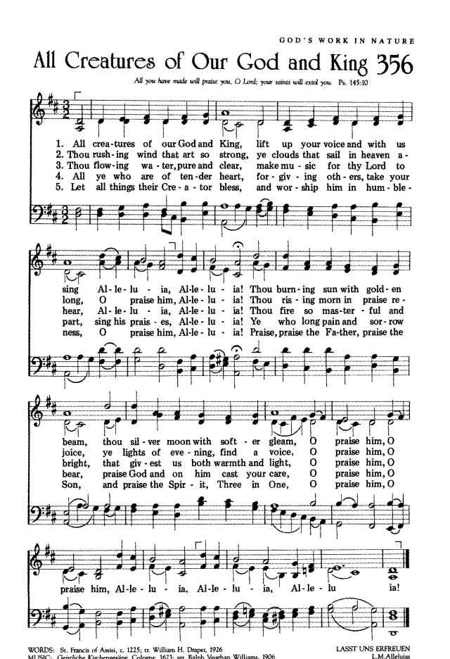

Sometimes called “The Canticle of the
Sun,” this cosmic roll call allows human beings to give voice to all
creation. One of the earliest religious poems in the Italian language,
it is made even more expansive by this broad, repetitive melody with
interspersed “Alleluias.”
1 *All creatures worship God most high,
lift up your voice in earth and sky,
alleluia, alleluia!
Thou burning sun with golden beam,
thou silver moon with softer gleam,
O sing ye, O sing ye, alleluia, alleluia, alleluia!
2 Thou rushing wind that art so strong,
ye clouds that sail in heav’n along,
alleluia, alleluia!
Thou rising morn in praise rejoice,
ye lights of evening, find a voice,
O sing ye, O sing ye, alleluia, alleluia, alleluia!
3 Thou flowing water, pure and clear,
make music for thy God to hear,
alleluia, alleluia!
Thou fire so masterful and bright,
that givest all both warmth and light,
O sing ye, O sing ye, alleluia, alleluia, alleluia!
4 Dear mother earth, who day by day,
unfoldest blessings on our way,
alleluia, alleluia!
The flow’rs and fruits that in thee grow,
let them God’s glory also show,
O sing ye, O sing ye, alleluia, alleluia, alleluia!
5 And ev’ryone, with tender heart,
forgiving others, take your part,
alleluia, alleluia!
Ye who long pain and sorrow bear,
sing praise and cast on God your care,
O sing ye, O sing ye, alleluia, alleluia, alleluia!
6 And thou, most kind and gentle death,
waiting to hush our final breath,
alleluia, alleluia!
Thou leadest home the child of God,
as Christ before that way hath trod,
O sing ye, O sing ye, alleluia, alleluia, alleluia!
7 Let all things their Creator bless,
and worship God in humbleness,
alleluia, alleluia!
To God all thanks and praise belong!
Join in the everlasting song:
O sing ye, O sing ye, alleluia, alleluia, alleluia!
*Or, “All creatures of our God and King, / lift up your voice and with us
sing”
這首詩歌是詩篇145篇的即興之作，又名「創造的聖詩」（Hymn of the Creation），太陽頌（Canticle of the
Sun），或「萬物頌」（Song of all the Creature），被譽為意大利文藝復興期最佳的聖詩。
它也是聖法蘭西斯最有名的聖詩，寫於1225年夏，當時他已病入膏肓，雙目失明，住在一草房，老鼠在屋內奔竄，令他晝夜難寢，在極度痛苦中，他仍能發出讚美的心聲。
聖法蘭西斯（St. Francis of Assisi, 1182-1226）出生在意大利Assisi山城, 故後人以此名之。
他父親是一富商，聖法蘭西斯少年時，放蕩不羈，組幫滋事，曾因與人打鬥而入獄。 在他廿五歲時，生命起了極大的轉變。
他放棄了優裕繁華的生活，決心追隨主，過簡樸助人的生活，他賙濟窮人，探訪麻瘋病院，與農民同工。
聖法蘭西斯個性樂觀開朗，酷愛自然，雖然他常受疾病侵襲，卻從不憂愁或悲傷。他一共寫了六十多首詩。十七世紀時這首詩歌曾被收集在天主教的德文聖詩集中。1926年英國牧師屈柏（William
H. Draper, 1855-1933）將它譯成英文，供某學校的兒童在聖靈降臨節歌唱。本歌曲調據傳乃起源于德國民歌。
真神所造萬象生靈，齊來歌唱讚美同聲，
哈利路亞，哈利路亞！金光燦爛火熱太陽，
清輝皎潔溫柔月亮，
讚美真神，讚美真神，哈利路亞！哈利路亞！
1. All creatures of our God and King, Lift up your voice and with us sing,
Alleluia! Alleluia! Thou burning son with golden beam,
Thou silver moon with softer glerm,
Oh, praise Him! Oh, praise Him! Alleluia! Alleluia! Alleluia!
這首詩,是義大利相當有名的拉丁聖詩,是亞西西的聖法蘭西斯(St. Francis of Assisi
1182-1226)所作,他就是世界各地的法蘭西斯會之創辦人。人們給他有"人世間最像基督的人"之封號,因相傳他因決心要效法基督,甚至連手心.腳面,都顯出耶穌被釘的傷痕,因此除了靈性,連肉身都像極了耶穌。
聖法蘭西斯（St. Francis of Assisi,
1182-1226，天主教稱為聖方濟，Assisi是他出生地）這首頌讚上帝創造的聖詩，選自他的太陽頌（Canticle of the Sun；拉丁文為Canticum
Fratris Solis），由 William Henry
Draper（1855-1933）譯成英文。這詩是1225年法蘭西斯臨終前一年的作品，當時他住在San Damiano
教會內。意大利酷熱難忍，視力幾乎失明，他患重病，這首熱誠的頌讚詩卻在此情況中產生。
在英美聖詩中有其他很多種歌詞同時被各教派採用：英國教會史家 St. Bede
(c673-735) 的A Hymn of Glory Let Us Sing。瓦茲 (Isaac Watts, 1674-1748) 後來William
Walsham How (1823- 1897) 改編成三一頌（頌榮）。John Athelstan Laurie Riley (1858-1945)
寫的歌詞 Ye watchers and ye holy ones 後來為Percy Dearmer 編The English
Hymnal時所使用。美國路德會牧師Paul Zeller Strodach（1876- 1947）翻譯成 Now All the Vault of
Heaven Resounds被用於復活節被收在美國路德會1958年出版的聖詩The Service Book and Hymnal中[1]。
Make Me an Instrument of
Your Peace
－St. Francis of Assisi
聖 方 濟 的 和 平 禱 詞
Lord, make me an
instrument of Your peace.
Where there is hatred, let me sow love;
Where there is doubt, faith;
Where there is despair, hope;
Where there is darkness, light;
Where there is sadness, joy.
O, Divine Master, grant that I may not so much seek
to be consoled as to console;
To be understood as to understand;
To be loved as to love;
For it is in giving that we are pardoned;
It is in pardoning that we are pardoned;
It is in dying that we are born again to eternal life.
聖方濟各亞西西（義大利語：San
Francesco d'Assisi；拉丁語：Sanctus
Franciscus Assisiensis；1182年7月5日－1226年10月3日），簡稱方濟各、方濟，亞西西（Assisi）天主教譯名外的中文一譯「阿西西」，是動物、天主教教會運動、美國舊金山以及自然環境的守護聖人，也是方濟各會（又稱「小兄弟會」）的創辦者（會祖），知名的苦行僧。教宗方濟各的名號就是為了紀念這位聖人。
方濟各(Francesco of
Assisi,1182-1226)出生於義大利的亞西西城，父親是富有的布商伯鐸·伯納戴德（Pietro Bernardone）。據說他出生時，父親剛好到法國做生意，母親為他取名約翰(Giovanni)；然而父親自法國經商歸來後，不喜歡他和施洗約翰同名，又因喜歡法國文化，因此將將其改名為方濟各(Franceso，法國人之意)。他英俊、機智、英勇，擁有富裕的家境，加上天生的領袖氣質，年少的方濟受同儕擁戴成「亞西西歡愉王子」，過著和紈褲子弟無異的豪奢生活。[3]
Bonaventure; Cardinal Manning (1867).
The Life of St. Francis of Assisi (from the Legenda Sancti Francisci)
(1988 ed.). Rockford, Illinois: TAN Books & Publishers. ISBN
978-0-89555-343-0
Chesterton, Gilbert Keith (1924). St.
Francis of Assisi (14 ed.). Garden City, New York: Image Books.
Englebert, Omer (1951). The Lives of
the Saints. New York: Barnes & Noble.
Karrer, Otto, ed., St. Francis, The
Little Flowers, Legends, and Lauds, trans. N. Wydenbruck, (London: Sheed
and Ward, 1979)
Robinson, Paschal (1913). "St. Francis
of Assisi"[2] （頁面存檔備份，存於網際網路檔案館）.
Catholic Encyclopedia. New York: Robert Appleton Company.
聖方濟各的生平
Friar Elias, Epistola Encyclica de
Transitu Sancti Francisci, 1226.
Pope Gregory IX, Bulla "Mira circa nos"
for the canonisation of St. Francis, 19 July 1228.
Friar Tommaso
da Celano: Vita Prima Sancti Francisci, 1228; Vita Secunda
Sancti Francisci, 1246–1247; Tractatus de Miraculis Sancti
Francisci, 1252–1253.
St. Bonaventure of Bagnoregio, Legenda
Maior Sancti Francisci, 1260–1263.
Ugolino da Montegiorgio, Actus
Beati Francisci et sociorum eius, 1327–1342.
Fioretti di San Francesco, the
"Little
Flowers of St. Francis", end of the 14th century: an anonymous
Italian version of the Actus; the most popular of the sources,
but very late and therefore not the best authority by any means.
Friar Elias, Epistola Encyclica de
Transitu Sancti Francisci, 1226.
Pope Gregory IX, Bulla "Mira circa nos"
for the canonization of St. Francis, 19 July 1228.
Friar Tommaso
da Celano: Vita Prima Sancti Francisci, 1228; Vita Secunda
Sancti Francisci, 1246–1247; Tractatus de Miraculis Sancti
Francisci, 1252–1253.
St. Bonaventure of Bagnoregio, Legenda
Maior Sancti Francisci, 1260–1263.
Ugolino da Montegiorgio, Actus
Beati Francisci et sociorum eius, 1327–1342.
Fioretti di San Francesco, the
"Little
Flowers of St. Francis", end of the 14th century: an anonymous
Italian version of the Actus; the most popular of the sources,
but very late and therefore not the best authority by any means.
The words of the hymn were initially written
by St. Francis of Assisi[2] in
1225 in the Canticle
of the Sun poem, which was based on Psalm
148.[3] The
words were translated into English by William Draper, who at the time was rector of
a Church
of England parish church at Adel near Leeds.
Draper paraphrased the words of the Canticle and set them to music. It is
not known when Draper first wrote the hymn but it was between 1899 and
1919.[4] Draper
wrote it for his church's children's Whitsun festival
celebrations and it was later published in 1919 in the Public School Hymn
Book.[1] The
hymn is currently used in 179 different hymn books.[2] The
words written by St Francis are some of the oldest used in hymns after
"Father We Praise Thee", written in 580 AD.[5]
Like "Ye
Watchers and Ye Holy Ones", Draper's text is usually set to the tune
of "Lasst
uns erfreuen", a German Easter hymn
published by Friedrich
Spee in 1623 in his book Auserlesene
Catholische Geistliche Kirchengesäng.[6][7] This
tune became widespread in English hymn books starting with a 1906
arrangement by Ralph
Vaughan Williams.[8][9][10][4][11]John
Rutter also wrote a piece of music for the hymn.[12] Despite
the hymn being initially written by Draper for Whitsun (the
Anglican and English designation for Pentecost),
it is mostly used in the earlier weeks of the Easter season.[13]
In the United Kingdom, the hymn was
prominently featured in the pilot
episode of the comedy programme Mr.
Bean, where the title character is in church when the congregation
sings "All Creatures of Our God and King", but he has no hymnal and his
neighbour refuses to share. The only lyric he can participate in is the
recurrent "Alleluia".[16]
Praise him, sun and
moon, praise him, all you
shining stars! Praise him, you highest
heavens, and you waters above
the heavens! Let them praise the
name of the Lord! For he commanded and
they were created.
~ Psalm
148:3-5
Hymn Story
Giovanni Francesco di Bernardone, more commonly known as St. Francis of
Assisi, was born in 1181 in Assisi, Italy. He was the son of a wealthy cloth
merchant, and grew up in a life of affluence. Still, he was known for his
charity toward the poor, something for which his father scolded him. Eventually, after a short career as a soldier (including a year which he
spent as a captive), he returned home and began to voluntarily lead a life of
poverty. He claimed to have seen a vision of Jesus Christ commanding him to
restore the Church, and gave himself over to serving the poor, sick, and lonely.
When his father became angry and tried to persuade him (even going so far as
beating him) to give up his religious calling and take up the family trade,
Francis renounced his father and his inheritance, and became a beggar himself. Francis began roaming the Italian countryside, preaching God’s word,
always cheerful and full of song. Soon other young men joined him, and they
eventually became known as the Franciscan Order. They were known as lovers of
nature, but worshipers of nature’s Creator. Francis was even known to have
preached to the birds, urging them to praise their Creator! In addition to his work as a preacher and an advocate for the poor,
Francis is regarded as the first Italian poet. He believed that commoners should
be able to pray and sing in their own language, and so he wrote in the
vernacular rather than in Latin. One of his greatest works of poetry is called
the Canticle of the Sun, which he wrote in 1224, shortly before his death. This
poem is the text for the hymn, “All Creatures of Our God and King.” The tune by which we now know these lyrics is from a German hymn called
“Lasst Uns Erfreuen”. It was harmonized by the English composer Ralph Vaughan
Williams, who, in addition to writing music, made a name for himself collecting
folk music and editing hymns. In his “English Hymnal”, which was first published
in 1904, Vaughan Williams combined many ancient texts with folk and hymn tunes. For their 2017 album Prayers of the Saints, Sovereign Grace Music
recorded this version of the hymn, which pairs two of Francis' stanzas with two
new ones (written by Jonathan & Ryan Baird) focusing on the redemption, the
return, and the rule of Jesus Christ our King:
Lyrics All creatures of our God and King Lift up your voice and with us sing, Alleluia! Alleluia! Thou burning sun with golden beam, Thou silver moon with softer gleam! CHORUS O praise Him! O praise Him! Alleluia! Alleluia! Alleluia!
Let all things their Creator bless, And worship Him in humbleness, O praise Him! Alleluia! Praise, praise the Father, praise the Son, And praise the Spirit, Three in One!
All the redeemed washed by His blood, Come and rejoice in His great love. O praise Him! Alleluia! Christ has defeated every sin, Cast all your burdens now on Him.
He shall return in power to reign, Heaven and earth will join to say, O praise Him! Alleluia! Then who shall fall on bended knee? All creatures of our God and King.
Hymn Study
The text for “All Creatures of Our God and King” is a meditation on the
145th Psalm, which is also heavily influenced by Psalm 148. Both of these psalms
exhort all of God’s creatures (the word “creature” simply means, “that which is
created”) to praise Him, and of God’s work in sustaining all of Creation. As we
read so often in Scripture, all of God’s works will praise His Name… everything
that is exists as a testimony to His greatness!
Psalm 145:5-12 On the glorious splendor of your majesty, and on your wondrous works, I
will meditate. They shall speak of the might of your awesome deeds, and I will
declare your greatness. They shall pour forth the fame of your abundant goodness
and shall sing aloud of your righteousness. The LORD is gracious and merciful,
slow to anger and abounding in steadfast love. The LORD is good to all, and his
mercy is over all that he has made. All your works shall give thanks to you, O
LORD, and all your saints shall bless you! They shall speak of the glory of your
kingdom and tell of your power, to make known to the children of man your mighty
deeds, and the glorious splendor of your kingdom.
Psalm 148:1-8 Praise the LORD! Praise the LORD from the heavens; praise him in the
heights! Praise him, all his angels; praise him, all his hosts! Praise him, sun
and moon, praise him, all you shining stars! Praise him, you highest heavens,
and you waters above the heavens! Let them praise the name of the LORD! For he
commanded and they were created. And he established them forever and ever; he
gave a decree, and it shall not pass away. Praise the LORD from the earth, you
giant sea creatures and all deeps, fire and hail, snow and mist, stormy wind,
fulfilling his word!
The poem which St. Francis composed is actually much longer than the
version which appears in our hymnals. One particular stanza, which appears
before the final verse (the one that begins “Let all things their Creator
bless”), gives God glory in a manner often neglected: the release from sin that
accompanies death. And thou, most kind and gentle death, Waiting to hush our latest breath, O praise him, Alleluia! Thou leadest home the child of God, And Christ our Lord the way hath trod: O praise him, O praise him, Alleluia, Alleluia, Alleluia!
Thanks be to God for reminders that even the things sinful people worship
(such as nature) and the things they fear (such as death) still work together
for the glory of our Creator God! A note about the image at the top of the page Jan Siberechts was a Flemish painter during the Renaissance period, and
is best known for developing a style of landscape painting in which his use of
light and perspective make figures stand out from the background against which
they are set. His 1666 painting Saint Francis Preaching to the Animals is an
example of this style.
The text of this beloved hymn of praise is a translation and paraphrase of a
text written by St. Francis of Assisi in 1225 known as the “Canticle of the Sun”
or “Song of All Creatures.” This specific translation was done by William H.
Draper around 1910 for a children’s Pentecost festival.
Differences in text abound between hymnals. Worship and Rejoice contains
a verse that is not found in many others, beginning: “All you who are of tender
heart….” Another verse found in some hymnals, such as the Psalter Hymnal and Presbyterian
Hymnal, begins, “Earth, ever fertile, day by day.” Even among similar
stanzas, the words differ. For example, in Worship and Rejoice, the third
stanza begins, “O flowing water, pure and clear,” while in the United
Methodist Hymnal, that same verse begins, “O sister water, flowing clear.”
Subtle differences, but enough to ensure no two hymnals are the same. Almost
every modern hymnal agrees, though, in taking out the original sixth stanza,
themed around death.
Tune:
The tune LASST UNS ERFREUEN is believed to be a seventeenth century German folk
melody. A common setting of the tune by Ralph Vaughan Williams was published in
1906, and is used in many hymnals today. The “Alleluias” and “O Praise Him” were
added to make the text fit this tune, and are a brilliant addition to the
existing text, emphasizing the scope of continual praise lifted to God from all
creation.
This melody definitely soars, and can be quite fatiguing when sung early in the
morning. Though commonly sung in the key of D, consider dropping it down to C if
you have an early service. Note too that this hymn is perfect for variations in
accompaniment. In each verse, pull out all the stops on the “Alleluias” while
maintaining long unison lines in the beginning. Pull back on stanza three –
perhaps with just light piano in the upper register, and come in again stronger
on the second half of that stanza which reads “Fierce fire, so masterful and
bright.” Again, pull out all the stops on the last stanza, or end it a cappella
– both can be powerful and meaningful.
LASST UNS ERFREUEN derives
its opening line and several other melodic ideas from GENEVAN 68 (68). The
tune was first published with the Easter text "Lasst uns erfreuen herzlich
sehr" in the Jesuit hymnal Ausserlesene Catlwlische Geistliche
Kirchengesänge (Cologne, 1623). LASST UNS ERFREUEN appeared in later
hymnals with variations in the "alleluia" phrases.
The setting is by Ralph
Vaughan Williams (PHH
316); first published in The English Hymnal (1906), it has
become the most popular version of LASST UNS ERFREUEN. In that hymnal the
tune was set to Athelstan Riley's "Ye watchers and ye holy ones" (thus it is
sometimes known as VIGILES ET SANCTI).
In this hymn a great text
is matched by an equally strong and effective tune. Try these two
possibilities of antiphonal singing: divide stanzas between women and men,
or assign the verses to one group and the "alleluias" to another.
Accompanists can signal such antiphonal effects in their use of varied
registration. Registration changes also will help interpret the text; for
example, the third stanza can begin with a lighter registration and move to
a "blazing" sound on the second half.
Try having the
congregation sing some stanzas unaccompanied but add organ (with full stops)
at the "alleluias." Or, for a fine effect, have the congregation sing some
stanzas in unison with accompaniment and the choir sing the "alleluias" in
harmony unaccompanied, as indicated in the Psalter Hymnal. It
is musically correct and pastorally wise to observe a fermata at the end of
the second "alleluia" on the second system by turning that half note into a
whole note. No ritard is necessary at the end of the hymn; it is built right
into the final "alleluia" phrase. Try adding instruments to enhance this
magnificent tune; there are several fine concertato versions in print that
involve trumpets and/or full brass scoring.
--Psalter Hymnal
Handbook
When/Why/How:
This hymn was written for Pentecost Sunday, and it remains a perfect opening
hymn for this occasion. It could also be used on Ascension Day or All Saints
Day, but really would be fitting as a Call to Worship or opening hymn of praise
any Sunday of the year.
Try pairing this hymn with “All Hail the Power of Jesus Name,” “O For a Thousand
Tongues to Sing,” or, when celebrating the Creation and the Creator, “For the
Beauty of the Earth,” “Let All Things Now Living,” or a contemporary song, “All
the Earth.” If you want to put the hymn in the context of its original text,
consider reading part or all of Matthew Arnold’s poetic, literal translation of
St. Francis’ text, before singing the hymn. This can be found in Albert Bailey’s
book, The Gospel in Hymns, on page 266.
Organ arrangements include "Variations
on All Creatures of Our God and King" by Janet Linker and "Partita
on Lasst uns erfreuen"; or for organ and brass Vaclav Nelhybel's arrangement
of LASST
UNS ERFREUEN. A setting of the hymn for praise band was made popular by
David Crowder. In his version, he tweaks the melody line of the third verse,
where he also, instead of singing “Alleluia,” sings “O Praise Him,” so make sure
your congregation is aware of these changes when introducing the song,
especially if they’re used to the standard hymnal version.
For choir, congregation, organ and trumpet, there is David
Busarow's arrangement; or for choir, congregation, handbells and brass try
Hal Hopson's "Concerto
on 'All Creatures Of Our God and King'". For choir alone, Craig Curry has
arranged "All
Creatures of Our God and King" in rhythm and blues style. A new song you
could introduce to your congregation, either during the offering or as prelude
music, is a setting of the Canticle of the Sun by Gungor, called “Brother Moon.”
This beautiful and uplifting setting perfectly evokes the joy of St. Francis’
text.
Scripture References:
st. 1 = Job 12:7-10, Ps. 148:3
st. 2 = Ps. 148:8
st. 4 = Ps. 148:9
st. 5 = Ps. 148:11-13
Virtually blind and unable
to endure daylight, St. Francis (b, Assisi, Italy, c. 1182; d. Assisi, 1226)
wrote this nature hymn during the summer of 1225 in the seclusion of a hut
near San Damiano, Italy. The text is a meditation on Psalm 145 (although it
also reflects Psalm 148 as well as the Canticle of the Three Young Men in
the Furnace-an apocryphal addition to Dan. 3). Originally in Italian ("Laudato
sia Dio mio Signore"), the text is known as the "Song of All Creatures" and
as the "Canticle of the Sun."
St. Francis of Assisi is
universally known for preaching to the birds and urging them to praise God.
But his whole life was one of service to God and humanity. The son of a
wealthy cloth merchant, Francis led a carefree, adventurous life as a youth,
but after an illness and a pilgrimage to Rome in 1205, he voluntarily began
a traveling life of poverty. He restored run-down chapels and shrines,
preached, sang devotional "laudi spirituali" (adapted from Italian folk
songs), and helped the poor and the lepers. Other young men joined him, and
Francis founded the order named after him; the Franciscans were approved by
the Pope in 1210. Legends about Francis abound, and various stories,
prayers, and visions are attributed to him.
William H. Draper (b.
Kenilworth, Warwickshire, England, 1855; d. Clifton, Bristol, England, 1933)
translated–or rather paraphrased–the text (which appears in virtually all
English hymnals) for a children's Whitsuntide (Pentecost) Festival in Leeds,
England, around 1910. Originally in seven stanzas, Draper's translation was
published with the tune LASST UNS ERFREUEN in the Public School Hymn
Book (1919). The modernized version in the Psalter Hymnal omits
the original stanza 6 (about death) and combines the original stanzas 5 and
7 into one (now st. 5).
Educated at Cheltenham
College and Keble College, Oxford, England, Draper was ordained in the
Church of England in 1880. He served at least six churches during his
lifetime, including the Temple Church in London (1919-1930). He is known for
his sixty translations of Latin, Greek, and German hymns, many published in The
Victoria Book of Hymns (1897) and Hymns for Holy Week (1899).
"All Creatures" is a
catalog text that enumerates various features of the creation and summons
all to praise the Lord with their "alleluias." Although not found in the
original text, the "alleluias" make splendid sense and are necessary for the
tune. Repeating the words "O praise him" each stanza emphasizes the cosmic
praise of all creation: the sun and moon (st. 1); wind, clouds, and light (st.
2); water and fire (st. 3); the earth and its produce (st. 4); all creatures
(st. 5).
Liturgical Use:
Many occasions as a strong opening hymn of praise; a congregational call to
worship; springtime prayer services for crops/industry and for harvest
thanksgiving (especially st. 4); festive processionals (use a concertato
arrangement with brass and choral parts).
In each stanza, the author personifies an aspect of nature as brother and sister
humankind. In the opening stanza, he calls all creatures in praise to God . . .
echoes of Psalm 8, Psalm 19 reminiscent in the back of our minds. Each stanza
ends with a Trinitarian “alleluia,” beginning with a two-part opening chorus
motif calling us to “praise him,” and concluding with the tripartite “alleluia.”
Some translations have translated the refrain as “Praise God” in an effort to
make the language more gender-neutral. Others have removed the language
considered to be archaic, “thees” and “thous” with we, you, and other modern
pronouns.
Stanza two speaks of the winds, clouds, moon, evening lights, and skies, all in
praise of the Creator.
Stanza three speaks of the flowing water, which brings cleansing and healing,
that clear water . . . double-entendre perhaps, speaking of Christ as living
water and the water that flows from the throne as referenced in the Old
Testament narrative. It also speaks of fire in contrast to water.
Stanza four breaks from this pattern of Creator-Creation praise to focus on the
act of forgiveness on the part of humans, created in the image of the Creator
and created to offer forgiveness to one another. God as forgiver, Christ as
sacrifice and bearer of our sin, shame, and care. Echoes of Christ bearing our
burden as he shares in Matthew 11 immediately come to mind. Once again, the
stanza ends in a closing Trinitarian refrain.
Stanza five could be considered a corollary to stanza one, once again calling
all of creation to bless their creator-God. This time, the Creator is praised as
the holy Three-in-One, Father, Spirit, and Son. The author calls all creation to
praise the Creator, to praise the Father, the Son, and Spirit, Three-in-one. And
as each stanza that preceded it, stanza five concludes with the Trinitarian
refrain.
ABOUT THE WRITERS
Photo Credit: hymnary.org
St. Francis of Assisi(ca. 1182–1226) lived during the
time of the Crusades, when the upper class and elite ruled the land and when
armored knights rode chivalrously on their horses across the European
countryside. But not Francis. A monk in search of reform, Francis lived a
humble, simple lifestyle in service to God and to his fellow man. He is said to
have loved nature, travel, and would preach to anyone who’d listen, even if it
was a group of birds in a cave. His love of nature and his love for the Creator
of nature is what birthed his “Song of Brother Sun and All Creatures,” or “Cantico
del frate sole.” It was one of several popularlaude
spirituale, or popular spiritual songs in Italian for use outside of the
liturgical context.
Francis is believed to have written this poem near the end of his earthly life,
during a period of tremendous pain and suffering. And among its more salient
details are the tone with which Francis writes, a tone that expresses a desire
for man and nature to be one, a love of the earth and all God’s creatures in it,
a voice way ahead of its time and well before any hint of a movement toward a
cultural and ecological revolution like America saw in the 1960’s.
Dr. J.R. Watson, British hymnologist observes: “In the original the saint gives
each element, such as fire and water, a human gender, so that they become
‘brother’ and ‘sister.’ This remains in the appellation of ‘Dear mother earth’
in verse 4, and is suggested by the personification of death as ‘kind and
gentle’ in verse 6. These elements in the hymn make it seem tender as well as
grand. It is based in part upon Psalm 148.”
Photo Credit: hymntime.com/TCH
In most English Versions, freely translated byWilliam
Henry Draper, we find either four or five verses. William Henry Draper
(1855–1933) was born at Kenilworth, GB and educated at Oxford for both
undergraduate and graduate degrees. He was ordained in 1880 to serve the
Anglican church at St. Mary’s in Shrewsbury, as well as in Alfreton, and Leeds.
Draper is credited as the paraphraser or free translator of this text attributed
to St. Francis.
He is also given credit for twelve to fifteen other hymns, the most popular
being “In our day of Thanksgiving, one psalm let us offer.”Julian
offers that Draper had some sixty hymns to his credit in 1907 and gave Draper
high praise for his verse. Draper composed his translation/paraphrase for the
occasion of a children’s celebration of Whitsuntide at Leeds between 1906 and
1919. It was published in thePublic
School Hymnbook of 1919,and Draper couldn’t remember the
exact date of his composition. It was set to Ralph Vaughan Williams tune, LASST
UNS ERFRUEN, a staple tune of British hymnody, in this publication, though it is
believed to have been sung and known prior to the 1919 book.
THE TUNE

hymn excerpt from The Worshipping Church
The tune, LASST UNS ERFREUEN, is most often set by Ralph Vaughan Williams, who
originally included it when he compiled and editedThe
English Hymnalin 1906. The title is derived from the
Eastertide text,Lasst
uns erfreuen herzlich sehr, from the 1623 Jesuit hymnal collection titledAusserlesene
Catlwlische Geistliche Kirchengesänge. Other texts often associated with
this tune include “Praise God From Whom All Blessings Flow,” “From All That
Dwell Below The Skies,” “Ye Watchers And Ye Holy Ones,” “Now All The Vault Of
Heaven Resounds,” and “Give To Our God Immortal Praise.” There are numerous
arrangements and opportunities for variation in texture, voicing, call and
response, or many other creative options. Erik Routley once suggested this hymn
to be a part of a broader family of tunes based on the major triad, including
MIT FREUDEN ZART.
One year for my birthday, I received the children’s book Miss
Rumphius by Barbara Cooney. It tells the story of a young girl named
Alice who listens to her grandfather tell stories of traveling to faraway places
and coming home to live beside the sea. Because of his example, she too wants to
travel the world. He tells her, “That is all very well, little Alice, but there
is a third thing you must do. You must do something to make the world more
beautiful.”
The little girl grows up and has many adventures of her own before retiring
beside the sea. She starts a garden among the rocky cliffs overlooking the
ocean, but is soon taken ill and confined to her bed. Even so, outside her
window flowers began to appear. Blue, purple, and rose-colored lupines. The next
spring she is much improved and begins to take walks along the rocky hillsides.
Much to her surprise, she finds lupines growing in the most unlikely places. She
then buys more seeds and begins to scatter them along the countryside. Much
occupied by the task, her health improves. She becomes known as “The Lupine
Lady,” and passes on the same words her grandfather shared with her to her own
granddaughter.
I’ve always loved that story and have often thought of it as I move through the
various seasons of my own life. What would it look like to spread beauty
throughout the world in simple ways like Miss Rumphius? To sing amid life’s
unanswered questions as the beloved St. Francis? I can’t help but feel that
these simple acts of faith are pleasing to God. A sweet and fragrant aroma.
Whatever the circumstance, in sorrow or joy, may we rest in full assurance that
God carries us. We need not be troubled by the cares of this world. We can rest
in his love, the truth of his word and because of these things we can SING.
And maybe in some small way that will make the world more beautiful.
西班牙人，早期在加斯特里（Castile）工作，在巴里西亞（Palencia）大學肆業，後來移居沙勒曼加（Salamanca），成為附屬奧斯曼座堂一宗教團體的成員。道明要以福音來贏取異端和異教徒，自己又過簡樸的生活，因而吸引了一群人跟隨他（1214）。他小心地教導他們，又與他們分享自己的夢想，要建立一個有學問的托𢢭僧傳道群體，（Order
of Friars Preachers , O. P.）。[5]
D. Bernard Marechaux。侯景文譯。《聖本篤的身世會規及靈修》。香港：光啟，1980。
Mirror of Perfection。韓山城譯。《成德明鏡》。香港：安道，1982。
Agostino Gemelli。韓山城譯。《方濟會靈修》。香港：安道，1983。
R. Fr. Damien Vorreux。嚴繆譯。《聖五傷方濟言論集》。香港：思高，1984。
Cajetan Esser。張俊哲神父譯。《振與教會之典範》。台北：思高，1988。
亞他拿修著。陳劍光譯。《聖安東尼傳》。香港：恩奇，1990。
周學信著。楊英慈等譯。《無以名之的雲》。台北：校園，2003。
艾瑟註釋。胡安德。《方濟忠告》。台北：思高，1992。
張力揚。《法蘭西斯生平》。2004/4/4。下載自
＜http://life.fhl.net/Philosophy/Thought/002.htm＞
蔡少琪。《教會歷史二》。香港：建道神學院，2003年冬。
梁家麟。《基督教會史略——改變教會的十人十事》。二版。香港：更新資源，1999。
楊牧谷編。《當代神學辭典》。台北：校園，1997。
BIBLIOGRAPHY
Audisio, Gaberiel. The Waldensian Dissent:
Persecution and Survival, c. 1770-c. 1570. Melbourne: The Press Syndicate
of the University of Cambridge.
Chronology of the Life of the most Holy
Patriach Saint Benedict.
Lambert, Malcolm. Medieval Heresy: Popular
Movements from Bogomil to Hus. Cambridge, Massachusetts.: Blackwell, 1992.
William S Stafford. “The Case for Downward
Mobility: Why did Francis insist that his followers live in absolute
poverty?” Christian History 42 (Vol.XIII, No.2),1994.
[1]Mirror
of Perfection，韓山城譯：《成德明鏡》（香港：安道，1982），頁21
[20] Malcolm
Lambert. Medieval Heresy: Popular Movements from Bogomil to Hus.: （Cambridge,
Massachusetts.: Blackwell, 1992）,63.
[21] Audisio,
Gaberiel. The Waldensian Dissent: Persecution and Survival, c. 1770-c.
1570.:（Melbourne:The
Press Syndicate of the University of Cambridge）,11-12.
[22] Malcolm
Lambert. Medieval Heresy: Popular Movements from Bogomil to Hus.: （Cambridge,
Massachusetts.: Blackwell, 1992）,64.
[23] Malcolm
Lambert. Medieval Heresy: Popular Movements from Bogomil to Hus.: （Cambridge,
Massachusetts.: Blackwell, 1992）,69.
^Brennan,
Elizabeth A. and Clarage, Elizabeth C. (1999).Who's
who of Pulitzer Prize Winners, p.420. Greenwood
Publishing Group.ISBN9781573561112.
^Fischer,
Heinz Dietrich (2010).The Pulitzer
Prize Winners for Music: Composer Biographies, Premiere
Programs and Jury Reports, p.20. Peter Lang.ISBN9783631596081.
^Heinz-Dietrich
Fischer, Erika J. Fischer (2001).Musical
Composition Awards 1943-1999: From Aaron Copland and
Samuel Barber to Gian-Carlo Menotti and Melinda Wagner,
p.xx. Walter de Gruyter.ISBN9783110955750.
This article is about the song composed by Saint Francis of
Assisi. For the composition by Sofia Gubaidulina, seeThe
Canticle of the Sun (Gubaidulina).
TheCanticle of the
Sun, also known asLaudes Creaturarum(Praise
of the Creatures) andCanticle of the Creatures,
is areligious
songcomposed bySaint
Francis of Assisi. It was written in anUmbrian
dialectofItalianbut
has since been translated into many languages. It is believed to be
among the first works of literature, if not the first, written in
the Italian language.[1]
The Canticle of the Sun in its praise
of God thanks Him for such creations as "Brother Fire" and "Sister
Water". It is an affirmation of Francis' personal theology as he
often referred to animals as brothers and sisters to Mankind,
rejected material accumulation and sensual comforts in favor of
"Lady Poverty".
Saint Francis is said to have composed
most of thecanticlein
late 1224 while recovering from an illness atSan
Damiano, in a small cottage that had been built for him bySaint
Clareand other women of herOrder
of Poor Ladies. According to tradition, the first time it was
sung in its entirety was by Francis and Brothers Angelo and Leo, two
of his original companions, on Francis' deathbed, the final verse
praising "Sister Death" having been added only a few minutes before.
A legend which emphasizes thetoposof
"brightness" says he did not physically write the Canticle, because
of his blindness from an eye disease; but he dictated it and he did
it looking at Nature through the eye of mind. Father Eric Doyle
wrote: "Though physically blind, he was able to see more clearly
than ever with the inner eye of his mind. With unparalleled clarity
he perceived the basic unity of all creation and his own place as a
friar in the midst of God's creatures. His unqualified love of all
creatures, great and small, had grown into unity in his own heart.
He was so open to reality that it found a place to be at home in his
heart and he was at home everywhere and anywhere. He was a centre of
communion with all creatures".[2]
The Canticle of the Sun is first
mentioned in theVita PrimaofThomas
of Celanoin 1228.
This section is a candidate to becopiedtoWikisource.
If the section can beeditedinto
encyclopedic content, rather than merely a copy of the
source text, please do so and remove this message.
Otherwise, you can help by formatting it per theWikisource
guidelinesin preparation for the
duplication.
Original text in
Umbrian dialect:
Altissimu, omnipotente bon
Signore,
Tue so le laude, la gloria e l'honore et onne
benedictione.
Ad Te solo, Altissimo, se
konfano,
et nullu homo ène dignu te mentouare.
Laudato sie, mi Signore
cum tucte le Tue creature,
spetialmente messor lo frate Sole,
lo qual è iorno, et allumini noi per lui.
Et ellu è bellu e radiante cum grande splendore:
de Te, Altissimo, porta significatione.
Laudato si, mi Signore,
per sora Luna e le stelle:
in celu l'ài formate clarite et pretiose et belle.
Laudato si, mi Signore,
per frate Uento
et per aere et nubilo et sereno et onne tempo,
per lo quale, a le Tue creature dài sustentamento.
Laudato si, mi Signore,
per sor'Acqua,
la quale è multo utile et humile et pretiosa et casta.
Laudato si, mi Signore,
per frate Focu,
per lo quale ennallumini la nocte:
ed ello è bello et iucundo et robustoso et forte.
Laudato si, mi Signore,
per sora nostra matre Terra,
la quale ne sustenta et gouerna,
et produce diuersi fructi con coloriti fior et herba.
Laudato si, mi Signore,
per quelli ke perdonano per lo Tuo amore
et sostengono infirmitate et tribulatione.
Beati quelli ke 'l
sosterranno in pace,
ka da Te, Altissimo, sirano incoronati.
Laudato si mi Signore, per
sora nostra Morte corporale,
da la quale nullu homo uiuente pò skappare:
guai a quelli ke morrano ne le peccata mortali;
beati quelli ke trouarà ne le Tue sanctissime uoluntati,
ka la morte secunda no 'l farrà male.
Laudate et benedicete mi
Signore et rengratiate
e seruiteli cum grande humilitate.
Notes: so=sono, si=sii
(be!), mi=mio, ka=perché, u and v are both written as u,
sirano=saranno
English Translation:
Most High, all powerful,
good Lord,
Yours are the praises, the glory, the honour, and all
blessing.
To You alone, Most High,
do they belong,
and no man is worthy to mention Your name.
Be praised, my Lord,
through all your creatures,
especially through my lord Brother Sun,
who brings the day; and you give light through him.
And he is beautiful and radiant in all his splendour!
Of you, Most High, he bears the likeness.
Praised be You, my Lord,
through Sister Moon and the stars,
in heaven you formed them clear and precious and
beautiful.
Praised be You, my Lord,
through Brother Wind,
and through the air, cloudy and serene,
and every kind of weather through which
You give sustenance to Your creatures.
Praised be You, my Lord,
through Sister Water,
which is very useful and humble and precious and chaste.
Praised be You, my Lord,
through Brother Fire,
through whom you light the night and he is beautiful
and playful and robust and strong.
Praised be You, my Lord,
through Sister Mother Earth,
who sustains us and governs us and who produces
varied fruits with coloured flowers and herbs.
Praised be You, my Lord,
through those who give pardon for Your love,
and bear infirmity and tribulation.
Blessed are those who
endure in peace
for by You, Most High, they shall be crowned.
Praised be You, my Lord,
through our Sister Bodily Death,
from whom no living man can escape.
Woe to those who die in
mortal sin.
Blessed are those who will
find Your most holy will,
for the second death shall do them no harm.
Praise and bless my Lord,
and give Him thanks
and serve Him with great humility.[3]
Perhaps the best-known version in
English is the hymn "All
Creatures of Our God and King", which contains a paraphrase of
Saint Francis' song byWilliam
H. Draper(1855–1933). Draper set the words to the
17th-century Germanhymn
tune"Lasst
uns erfreuen", for use at a children's choir festival sometime
between 1899 and 1919.[4]
Franz Liszt(1811–1886) composed several pieces
titled "Cantico del sol di Francesco d'Assisi", with versions for
solo piano, organ, and orchestra, composed or arranged between 1862
and 1882.
The American composerAmy
Beach(1867–1944) set the Canticle to music for
organ or orchestra, choir, and solo vocal quartet, in 1924. The
piece was first performed with organ in 1928 at St. Bartholomew's in
New York. The orchestral version was first performed by the Chicago
Symphony and the Toledo Choral Society in 1930.
Charles Martin Loeffler (1861–1935)
set a modern Italian translation of the original Umbrian dialect
text for soloists and chamber orchestra ca. 1929 which was performed
in the same 1945 Carnegie Hall concert as Sowerby's setting.
Laudes Creaturarum was also set to
music, in 1954, by German composerCarl
Orff.
Roy Harris (1898–1979) composed a
setting for soloists and a large ensemble in 1961.
In the 1961 film,Francis
of Assisi, the actor playing Brother Leo begins to sing the
canticle but is overwhelmed by tears. Francis (Bradford
Dillman) continues proclaiming, not singing, the rest.
Seth Bingham (1882–1972) made a
setting in 1962.
San Francisco organist-composerRichard
Purvis, who presided at Grace Cathedral, wrote a St. Francis
Suite in 1964[6]which
featured Canticle of the Sun as its concluding movement.
Another setting of the Canticle of the
Sun, titledCantico del solewas
composed byWilliam
Walton(1902–1983) in 1974 for the Cork
International Choral Festival.
American composerMarty
Haugenwrote a setting in 1980, published byGIA
Publicationsentitled "Canticle of the Sun."
The acclaimed Spanish composerJoaquín
Rodrigocomposed a piece to the words in Spanish of
the Canticle, for choir and orchestra in 1982:Cantico
de San Francisco de Asis.
The Italian folk singerAngelo
Branduardicomposed aballadentitled
"Il cantico delle creature" in year 2000 based on the original
lyrics of the Canticle.
Estonian composer Tõnu Kõrvits (b.
1969) composed a 12-partA
cappellapiece for mixed choir (SSAATTBB)
"The Canticle of the Sun" for Southern Chorale choir in 2014.
Italian pop singer Jovanotti performed
the song as part of a special concert in Assisi in 2014. It was
simply him and another guitarist performing "unplugged" style.
Pope Francispublished his second encyclicalLaudato
si'on June 18, 2015. The Canticle inspired the
encyclical's title, "Praise be to you," and was quoted in the first
paragraph, "Praise be to you, Our Lord, through our Sister, Mother
Earth, who sustains and governs us, and who produces various fruits,
with colored flowers and herbs."
The Irish composer Vincent Kennedy was
commissioned by the Irish Franciscans to set the Canticle of the Sun
for Soprano, Harp and Trumpet. The resulting work has 9 songs
containing the complete text of the Canticle. The first performance
took place in the Franciscan church of Adam and Eve in Dublin on 4
June 2017.
Elizabeth Goudge, English novelist,
included a version of the canticle in her short story about a
Franciscan monk,Our Brother the Sun, published
in January 1946: later, in her 1946 children's novelThe
Little White Horse, she providesSpring Song,
a hymn written as a verse paraphrase, supposedly by the character,
Old Parson: Chapter 9, Part 3.
聖方濟各的禱文（英語：Prayer
of Saint Francis）是基督徒的禱文，被假託為13世紀聖徒聖法蘭西斯（聖方濟各）所作，但沒有證據能證明此禱文在1912年以前已經存在[1]。這篇禱文自1936年起於美國流行，紐約總主教弗蘭西斯·斯貝爾曼和參議員侯勤士（Albert
W. Hawkes）於第二次世界大戰期間，開始大量印發這篇禱文[2]。


.jpg)


![<< <<
\new Staff { \clef treble \time 3/2 \partial 2 \key es \major \set Staff.midiInstrument = "church organ" \set Score.tempoHideNote = ##t \override Score.BarNumber #'transparent = ##t
\relative c'
<< { es2^\markup { \italic "Unison." } | es4 f g es g as | <bes f>1 es,2 | es4 f g es g as | <bes f>1 \bar"||"
es4^\markup { \italic "Harmony." } d | c2 bes es4 d | c2 bes\fermata \breathe \bar"||" es2^\markup { \italic "Unison." } | es4 bes bes as g as | <bes f>1 es2 | es4 bes bes as g as | bes1 \bar"||"
as4^\markup { \italic "Harmony." } g | f2 es as4 g | f2 es es'4 d | c2 bes es4^\markup { \italic "Unison." } d | c2 bes as4 g | f1. | es1 \bar"|." } \\
{ bes2 | es1 es2 | es2 d es | bes4 d es2 es2 | es2 d
bes'4 bes | bes( as) g2 es4 d | g( f) d2 bes'4 as | g2~ g4 f es2 | es d es4 f | <bes es,> <as d,> <g es> es2. | es4 d g f
es4 es | es( d) es2 es4 es | es( d) c2 g'4 f | g( f) d2 <bes' g>~ | <bes g>4 <as f>4~ <as f> <g c,> c, es | es2 d1 | bes } \\
{ s2 | s1. | s1. | s1. | s1
s2 | s1. | s1. | s1. | s1 \stemDown \once \override NoteColumn.force-hshift = 0 bes'2 } >> %necessary for that one note
}
\new Lyrics \lyricmode { \set stanza = #"1."All2 crea4 -- tures of our God and King,1
Lift2 up4 your voice and with us sing1
Al4 -- le -- lu2 -- ya, al4 -- le -- lu2 -- ya!
Thou2 burn4 -- ing sun with gold -- en beam,1
Thou2 sil4 -- ver moon with soft -- er gleam:1
O2 praise him, O praise him
Al4 -- le -- lu2 -- ya, Al4 -- le -- lu2 -- ya, Al4 -- le -- lu1. -- ya!1
}
\new Lyrics \lyricmode { \set stanza = #"2." Thou2 rush4 -- ing wind that art so strong,1
Ye2 clouds4 that sail in heaven a -- long,1
O2 praise him! Al4 -- le -- lu2 -- ya!
Thou2 ri4 -- sing morn, in praise re -- joice,1
Ye2 lights4 of eve -- ning, find a voice1
}
\new Lyrics \lyricmode { \set stanza = #"3." Thou2 flow4 -- ing wa -- ter, pure and clear,1
Make2 mu4 -- sic for thy Lord to hear,1
Al4 -- le -- lu2 -- ya, al4 -- le -- lu2 -- ya!
Thou2 fire4 so mast -- er -- ful and bright,1
That2 giv4 -- est man both warmth and light:1
}
\new Lyrics \lyricmode { \set stanza = #"7." Let2 all4 things their Cre -- a -- tor bless,1
And2 wor4 -- ship him in hum -- ble -- ness,1
O2 praise him! Al4 -- le -- lu2 -- ya!
Praise,2 praise4 the Fa -- ther, praise the Son,1
And2 praise4 the Spi -- rit, three in One:1
}
\new Staff { \clef bass \key es \major \set Staff.midiInstrument = "church organ"
\relative c'
<< { g2 | g4 as bes g c2 | bes1 bes4 c | bes as bes2 c | bes1
es4 es | es2 es g,4 bes | bes( a) bes2 es2 | es2~ es4 bes bes as | f2 bes bes | bes~ bes4 es d c | bes1
c4 c | c( bes) bes2 c4 bes | c( as) g2 g4 bes | bes( a) bes2 g2~ | g4 as f g as bes | c2 bes as | g1 } \\
{ es2 | es~ es2 es8 d c4 f | bes, bes'4 as g as | g f es d c f | bes,2 bes'4 as
g g | as2 es c4 d | es( f) bes,2\fermata g'4 f | es d c d es c | bes2 bes'4 as g as | g f es c' bes as | g f es d
c bes | as2 g f4 g | as( bes) c2 c4 d | es( f) bes,2 c4 d | es f d e f g | as2 bes bes, | <es es,>1 } \\
{ s2 | s1. | s1. | s1. | s1
s2 | s1. | s1. | s1. | s1. | s1. | s1
s2 | s1. | s1. | s1 \stemUp \once \override NoteColumn.force-hshift = 0 bes'2 } >> %necessary for that one note
}
>> >>
\layout { indent = #0 }
\midi { \tempo 2 = 80 }](https://upload.wikimedia.org/score/1/v/1viyf6pz0gm8ypzqxfrjdy0l9ypjcgd/1viyf6pz.png)


{kind=link}
{kind=link}